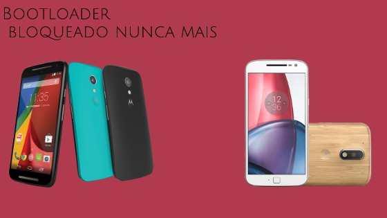
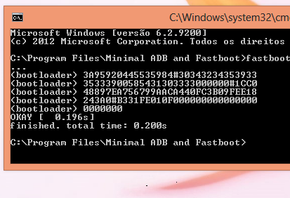
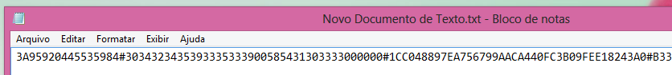
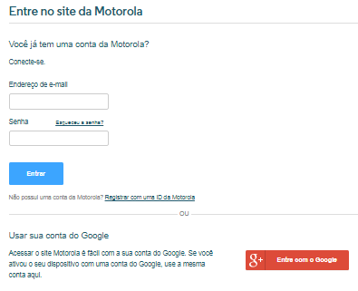
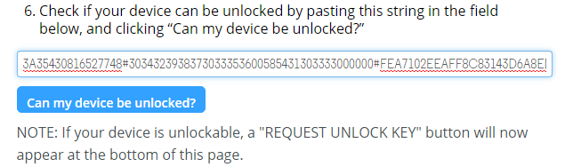
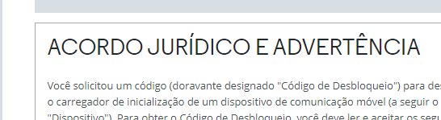
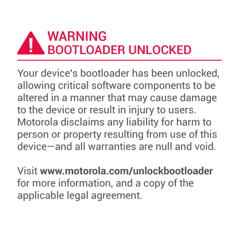
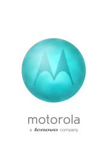

Como realizar desbloqueio de Bootloader em qualquer moto G, É ou X?
Nada melhor do que personalizar o aparelho a seu modo não? Mas para isso é necessário que o desbloqueio do bootloader seja realizado, pois, sem esse método não haverá como realizar root, recovery-custom ou qualquer outro acesso de super-usuário que deseje. O procedimento para o mesmo é bastante fácil e funciona com praticamente todos os aparelhos da linha Moto apenas saiba que com esse método a garantia do seu aparelho será anulada.
Para esse tutorial você irá precisar:
# Vale lembrar que esse procedimento irá apagar a memória interna do aparelho, por isso recomendamos que mantenha um “backup” do seu aparelho em um lugar seguro.
Após ter baixado os arquivos listados acima, instale os Drives USB da Motorola, minimal_adb_fastboot_v1.1.3_setup.exe e extraia o arquivo de logo modificado.
-
Ao realizar a instalação do Minima adb clique na caixa de seleção para criar atalho na tela inicial, feito isso vá a aréa de trabalho do seu pc e inicie o Minimal ADB and Fastboot.
Vamos por o aparelho em modo Fastboot, pressione a tecla Power e o volume - por 3 segundos e as solte, após isso Conecte o aparelho ao PC.
No prompt de comando digite: fastboot oem get_unlock_data
-

O prompt do windows irá retornar 5 linhas de código que você deverá copia-los e colar em um editor de texto.
#Dica: Para selecionar todas as linhas de código pressione a tecla direita do mouse apartir da última linha de código até a primeira, então pressione a tecla enter. -
No editor de texto deve-se colar esses códigos e remover o espaçamento e o nome "Bootloader" que há entre cada linha para que assim o código ocupe apenas um lugar.
Bem este é o código do bootloader. Agora Você deve acessar o site da Motorola clicando neste Link para fazermos a utilização do mesmo.
-

Ao abrir o site da Motorola faça login para prosseguir, se não tiver uma conta da mesma utilize uma Google clicando no retângulo abaixo da página de login.
-

Após o login cole o código copiado para que o mesmo seja aceito, então clique em “Can my device be unlocked?”. Se o código for aceito, será gerado um contrato de termos onde você concordará que leu e está ciente que a garantia do seu aparelho será anulada.
-

Após isso, basta clicar em “Request unclock key”. A chave será enviada para o email que utilizamos no login do site.
-
Ao receber a chave volte ao prompt de comando e execute o código: fastboot oem unlock [chave]
No lugar da [chave] insira os 20 caracteres que recebeu da Motorola. Agora de enter e o seu dispositivo já ira reiniciar com o bootloader desbloqueado.
-

Para removermos este aviso prossiga com todas as configurações e desligue o aparelho. Com ele desligado ponha-o em modo Fastboot e o conecte no pc.
Na área de trabalho clique com a tecla esquerda do mouse sobre Minimal ADB and Fastboot e escolha Abrir local do arquivo feito isso Passe o arquivo logo.bin para esse local e Volte para o prompt do Windows que ficou aberto. Execute os seguintes comandos:
- fastboot flash logo logo.bin
- fastboot reboot
-

Pronto agora você não será mais encomodado por esse aviso e o seu smartphone está pronto para resceber Root, Recovery-Custom, Custom-rom e muito mais.
Então se obteve problemas com alguns dos passos listados acima, fique tranquilo a deixar os seus comentários logo abaixo.